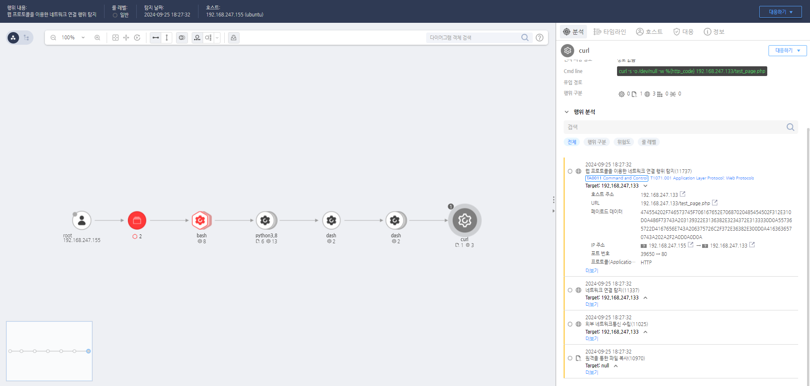

MITRE ATT&CK 액션을 기준으로 대응 방안을 작성
Curl과 같은 도구가 80번 포트를 사용하여 통신할 경우 탐지한다.
 https://172.18.10.125:8903/#/event/edr/66f3d8c1002dc79600004e01
이상 트래픽 분석 및 차단 웹 트래픽과 관련된 애플리케이션 계층 프로토콜(HTTP/HTTPS)의 비정상적인 동작을 탐지하고 분석합니다. 정상적인 트래픽과 공격자가 사용한 트래픽을 구분하기 위해 웹 로그(예: 요청 URI, User-Agent, 요청 크기 등)를 분석하고, 의심스러운 패턴이나 이상 행동이 발견되면 해당 트래픽을 차단합니다. 알려진 C2(Command and Control) 서버와의 통신이 확인되면 즉시 해당 연결을 차단하고, 추가적인 분석을 통해 해당 시스템을 격리합니다.
포렌식 조사 및 관련 시스템 모니터링 공격자가 통신한 원격 시스템의 IP 주소나 도메인을 식별하고, 해당 시스템과의 모든 트래픽을 분석합니다. 의심스러운 통신이 확인된 시스템에 대해 포렌식 조사를 실시하고, 명령과 제어(C2) 서버와의 통신에서 사용된 프로토콜, 패턴, 명령 등을 분석하여 공격자의 의도를 파악합니다. 감염된 시스템이나 의심스러운 활동이 확인된 시스템을 격리하여 더 이상의 피해 확산을 방지합니다.
웹 로그 및 메타데이터 수집 웹 서버, 프록시 서버, 방화벽 등의 로그를 수집하고, 공격자가 사용한 웹 트래픽의 특징을 식별합니다. HTTP/HTTPS 요청 및 응답 헤더, URL 패턴, 요청 크기, 시간대 등의 메타데이터를 수집하여 공격자가 사용한 특정 트래픽 패턴을 분석합니다. 수집된 정보를 바탕으로 추가적인 공격 시도를 탐지할 수 있도록 경고 설정을 강화합니다.
감염된 시스템의 계정 및 권한 점검 감염된 시스템에 사용된 사용자 계정의 활동을 점검하고, 비정상적인 활동이 감지된 계정의 비밀번호를 변경합니다. 공격자가 특정 계정으로 시스템에 접근했을 가능성이 있으므로, 관련 계정의 권한을 제한하거나 비활성화합니다. 감염된 시스템의 권한 설정 및 액세스 로그를 검토하여, 추가적인 악의적인 활동을 탐지하고 차단합니다.
유출된 데이터의 식별 및 손해 평가 공격자가 통신을 통해 유출했을 가능성이 있는 데이터를 식별하고, 데이터 유출의 영향을 평가합니다. 유출된 데이터가 기밀 정보일 경우, 관련 부서 및 이해관계자에게 즉시 통보하고, 유출로 인한 피해를 최소화할 수 있는 대응 방안을 마련합니다.
웹 필터링 및 방화벽 설정 강화 웹 필터링 솔루션을 도입하여 비정상적인 웹 요청(예: 잘 알려진 웹 기반 C2 서버, 의심스러운 User-Agent 등)을 차단합니다. 허용된 도메인 및 IP 주소 목록을 구축하고, 비허용 도메인 또는 IP로의 접근을 차단하여 공격자가 사용하는 C2 서버와의 통신을 방지합니다. 방화벽 설정을 강화하여 특정 애플리케이션 계층 프로토콜을 통해 이루어지는 비정상적인 트래픽을 차단합니다.
TLS/SSL 암호화 트래픽 검사 암호화된 트래픽(TLS/SSL)을 복호화하여 내부 트래픽을 분석할 수 있도록 프록시 서버나 네트워크 보안 장비에서 TLS/SSL 인스펙션을 설정합니다. HTTPS를 통해 전달되는 악성 트래픽을 탐지하기 위해, 알려진 C2 서버와의 암호화된 연결을 차단하거나 모니터링합니다.
DLP(Data Loss Prevention) 솔루션 도입 데이터 유출 방지(DLP) 솔루션을 도입하여 민감한 정보가 웹 트래픽을 통해 외부로 유출되는 것을 방지합니다. DLP 규칙을 설정하여, 특정 키워드 또는 패턴을 포함하는 데이터가 웹 트래픽을 통해 전송될 경우 이를 탐지하고 차단할 수 있도록 설정합니다.
보안 교육 및 인식 제고 웹 트래픽을 이용한 데이터 유출에 대한 보안 교육을 실시하고, 직원들이 의심스러운 웹 활동에 대해 경각심을 가질 수 있도록 합니다. 웹 기반 C2 서버와 통신하는 공격 방식과 이를 탐지하고 차단하는 방법에 대해 주기적으로 교육하고, 보안 인식을 제고합니다.
정책 기반 접근 제어(PBAC) 및 네트워크 분리 정책 기반 접근 제어(PBAC)를 도입하여, 승인된 사용자와 애플리케이션만이 외부 네트워크에 접근할 수 있도록 제한합니다. 중요 시스템과 네트워크를 분리하여, 공격자가 외부 서버와 통신하는 것을 제한하고, 내부 네트워크의 중요 데이터를 보호합니다.
Action 실행시 함꼐 영향을 받는 다른 Techniqes
| ATT&CK |
|---|
| T1071.001 |
| D3FEND |
|---|
| D3-NTA Network Traffic Analysis |
| D3-NTF Network Traffic Filtering |
| D3-ITF Inbound Traffic Filtering |